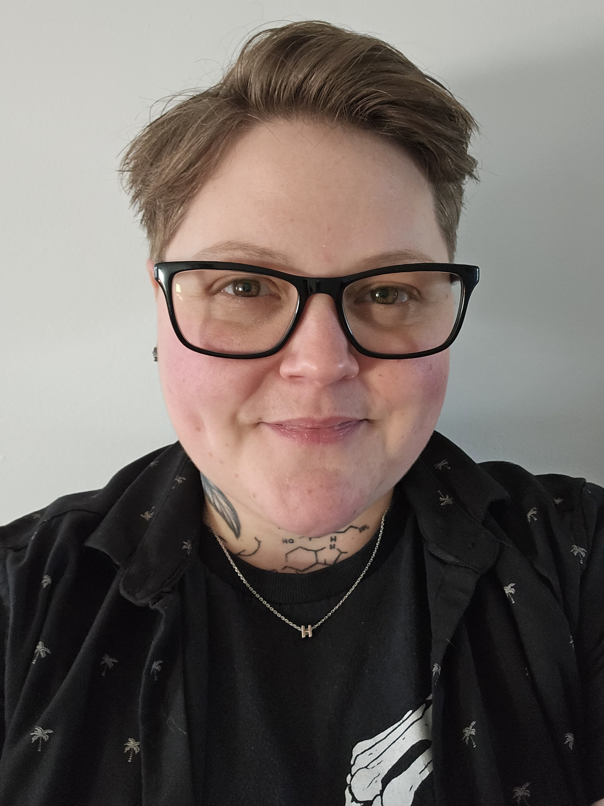

As I approach the completion of the Information Technology Systems Management and Security program at the Truro, Nova Scotia Community College, I am excited about the opportunities ahead.
As someone who has faced many challenges and worked diligently to achieve my goals, I have developed a strong work ethic and resilience that I bring to every project. When I am not studying or working on projects, I enjoy drawing, video games, sports, hiking, and exploring new technologies.
As a student, I bring a high level of "coachability," a fresh perspective on emerging security trends, and a dedication to ethical decision-making. I am looking for a fast-paced environment where I can apply my drive and technical training to help shape a resilient identity infrastructure.
Identity and access management has been the focal point of my studies. For my capstone project, Fort Faux, I served as the Documentation and Security Analyst, where I helped design and secure a full network infrastructure for a simulated institution. This project allowed me to stress-test access controls and authentication policies through Red Team vs. Blue Team exercises, giving me a practical understanding of zero-trust principles and layered defense. Additionally, my self-directed project, AD2GO, allowed me to explore the intersection of mobility and security by building a web application for Active Directory management. Completing this project has taught me how to balance operational agility with strict security protocols, as well as exploring new skills such as web development, DevOps, and cloud technologies.
My Co-op experience as a Summer PC Technician with the Municipality of Colchester provided a bridge between my studies and the workforce. Working in a live government environment, I deployed SonicWall and FortiGate firewalls, configured workstations within an enterprise domain, and developed technical documentation to maintain consistent security standards. This role taught me the importance of IAM in a real-world setting where citizens and employees depend on secure, reliable access to services.
Now, The Municipality has accepted me back for another work term, and I am eager to apply my knowledge and skills in a professional setting, contributing to innovative projects and continuing to grow as an IT professional within their company.
Resume